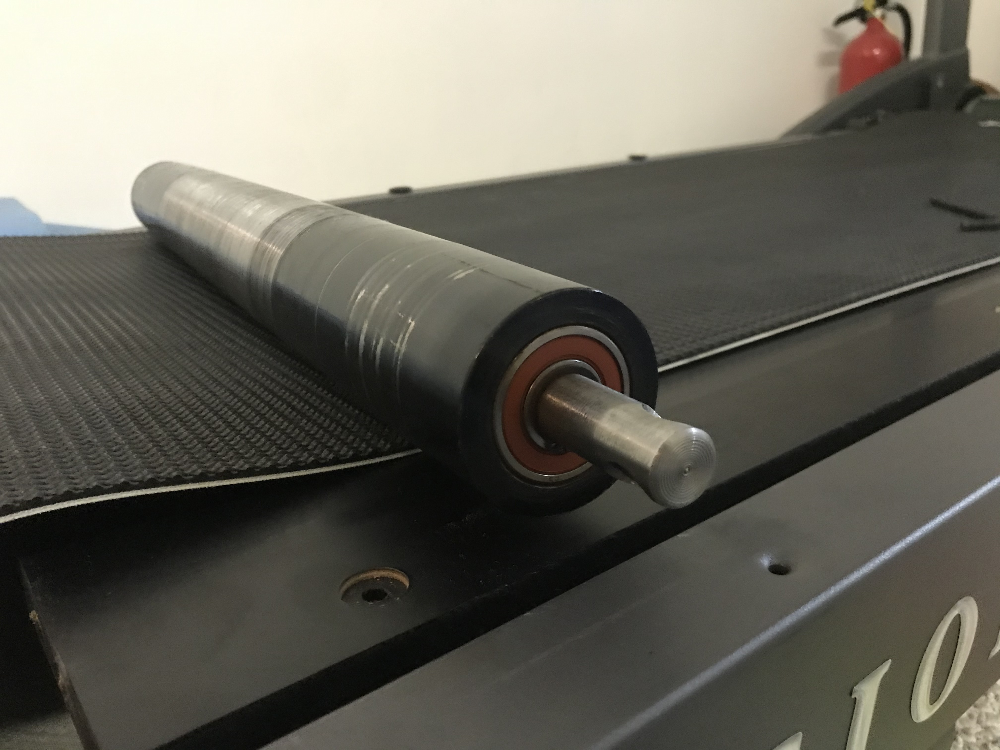
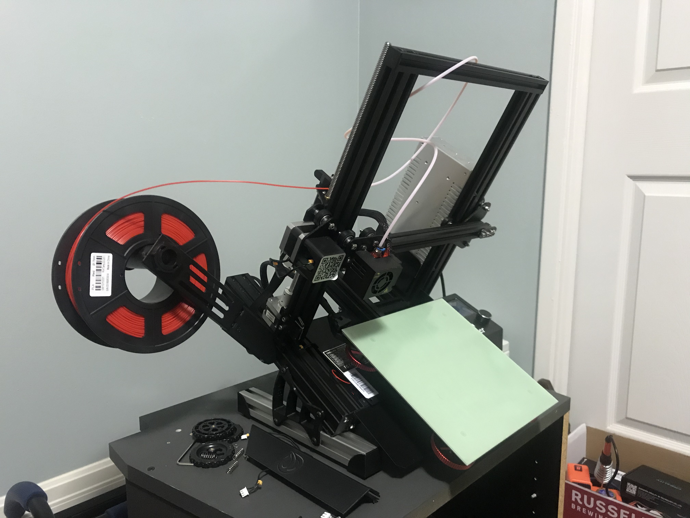

1. Auto Work
As a hands on, visual learner, I have taken on several projects to repair or maintain larger mechanical systems. I own a 2009 Hyundai Elantra in which I've enjoyed performing brake and rotor replacement, re-tensioning of the drive belt and performing basic maintenance (oil, spark plug and filter changes). It’s always a win-win scenario when you can save money by performing your own repairs while learning new skills.
2. Treadmill Replacement
After 5 long years, my family treadmill broke down and started clunking and whining from the rotors. I performed a root cause analysis and took the treadmill apart including the motor assembly, belt drive, wooden platform and both rotors.
Initial Clanking and Whining
Upon inspection, the right bearing on the front roller had a broken retainer cage and seal which led to major debris accumulation inside of the bearing. This loss of support was attributed in the clanking every time the roller would perform a revolution. I rented a bearing slide hammer removal tool to pull the broken shell out of the roller and I decided to remove the other three bearings out as well, since the bearing replacement parts were only around $20 at my local Princess Auto store.

Replacement bearing in roller
I threw the new bearings in a freezer to let them contract and then used a hydraulic press to press them back into both roller assemblies. After this replacement was complete, I could start putting the full treadmill assembly back together. I finished this project by re-tensioning the drive belt and spraying some WD40 on the squeaky folding cylinders to bring my family treadmill back to great condition.
3. 3D Printing
I own two 3D printers and have been consistently designing and printing different builds for the past three years. I’ve performed motherboard and hot end modifications and most recently was gifted an automated printing kit from 3DQue. This kit includes a proprietary VAAPR bed material and angled tilt to automatically push prints off of the bed while constantly starting up new prints in queue.

Ender 3 printer w/ 3DQue automated print modifications